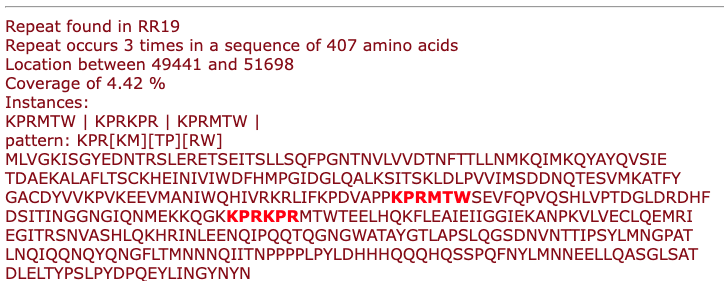

Cyclopeptide BGC detection#
This module supports the detection of cyclopeptide BGCs in the presence of a BURP domain and repeat sequences.
The Cyclopeptide detection module identifies biosynthetic gene clusters (BGCs) associated with cyclopeptide production in plants. Detection is based on two main criteria:
-
The presence of a BURP domain (a characteristic biosynthetic domain).
-
The presence of internal amino acid repeats within coding sequences, suggesting the existence of cyclopeptide precursor peptides.
Once a candidate BGC is identified, the module performs the following steps:
-
Repeat Detection: Using a repeat-finding algorithm, the module scans the coding sequences (CDSs) inside the cluster for repeated amino acid motifs.
-
Pattern Matching: Detected repeats are matched against known cyclopeptide-related patterns where available, or reported as new motifs.
-
Filtering Logic: Only clusters containing both a BURP domain and at least one repeat with appropriate features are retained.
-
Result Summary: For each coding sequence with detected repeats, the module reports:
-
The identified repeat patterns.
-
The number of repeat instances.
-
The location and sequence coverage.
A visual highlight of the repeats inside the amino acid sequence.
The output includes a detailed view showing the repeat locations, pattern matches, and highlighted sequences.

Known Cyclopeptide Motif Detection#
This module includes detection of known amino acid repeat motifs that are commonly found in plant cyclopeptides. These motifs are defined using regular expressions to flexibly capture conserved sequence patterns, including tolerated variability.
The following known motifs are currently supported:
| Motif Name | Regex Pattern | Description |
|---|---|---|
| Lyciumins | QP.{5}W |
Glutamine–Proline followed by any 5 residues and a Tryptophan. |
| Legumenin | QP.{3}Y.W |
Glutamine–Proline with 3 residues, a Tyrosine, any residue, and a Tryptophan. |
| Bicyclic cyclopeptide alkaloid | .{1}L.{1}Y..Y |
Leucine at position 2, Tyrosines spaced within six residues. |
| DUF2775 core peptide (Pfam: PF10905) | VS[AI]Y |
Conserved Valine–Serine followed by Alanine or Isoleucine, and Tyrosine. |
| DUF2775 leader peptide (Pfam: PF10905) | FEPR |
Short leader motif with Phenylalanine–Glutamate–Proline–Arginine. |
| Cca-like peptide | QI.{2}W |
Glutamine–Isoleucine followed by any two residues and a Tryptophan. |
| Stephanotic acid-like | QL.{2}W |
Glutamine–Leucine followed by any two residues and a Tryptophan. |
| Valine–Tyrosine pattern | V.{2}Y |
Valine followed by any two residues and a Tyrosine. |
Notes:#
- These motifs are used to identify known cyclopeptide-related repeats in coding sequences.
- Only matches within CDS features containing internal repeats are considered.
- The list of motifs is defined in
known_motifs.txt(one regex per line).
Customising the module#
You can easily extend known_motifs.txt to support additional motifs for other peptide classes.